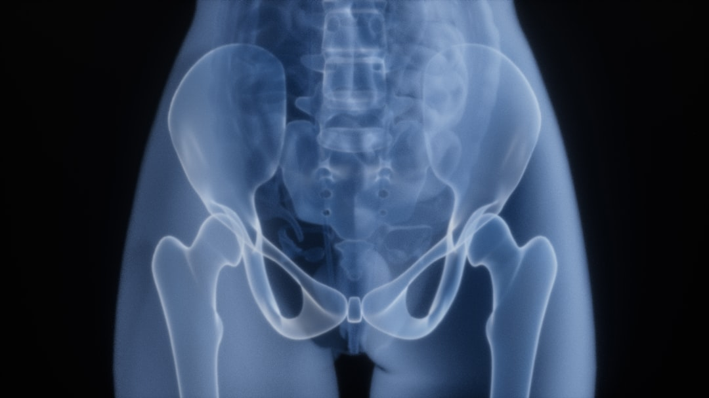
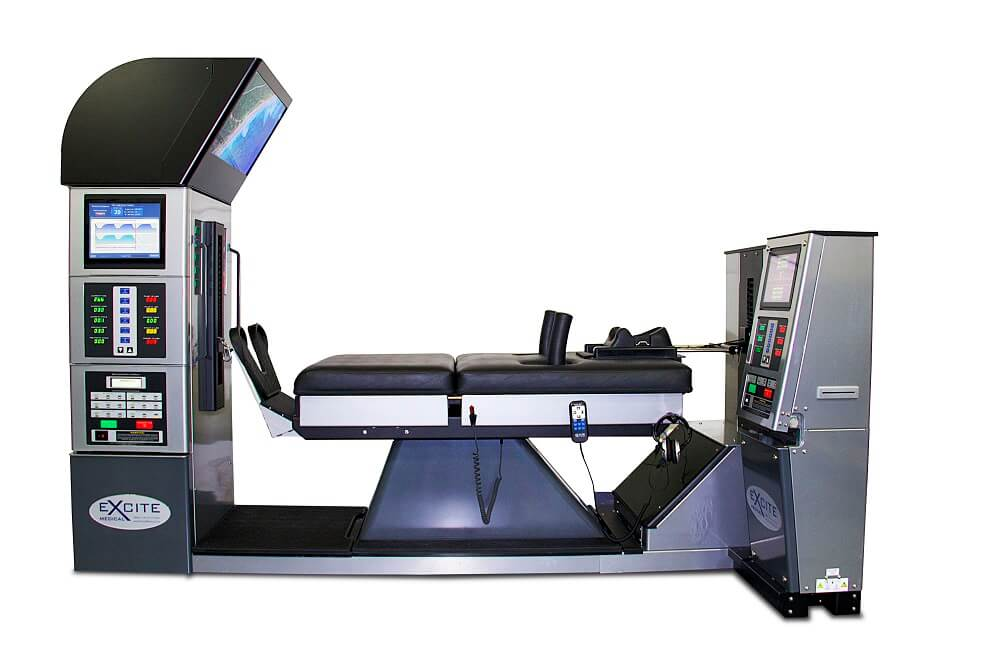
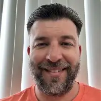
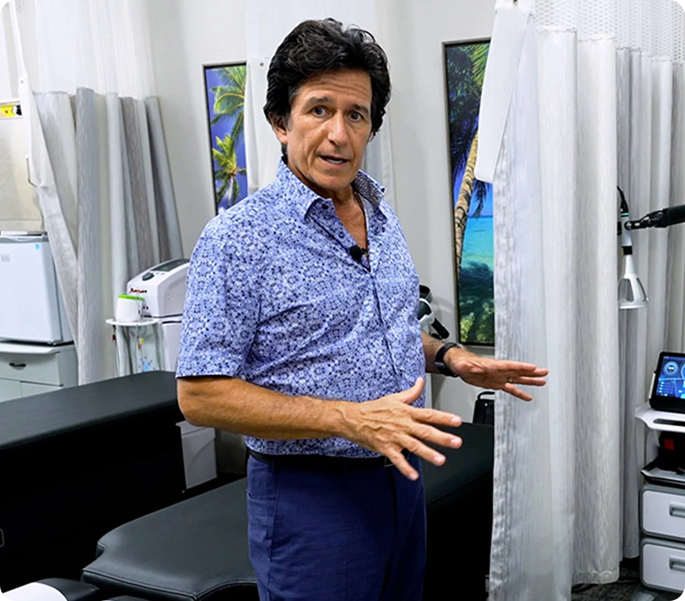

Accurate diagnosis starts with accurate imaging. Novaré Injury Care and Rehab provides on-site digital x-rays with the most powerful equipment available in the chiropractic marketplace, plus MRI coordination and in-house radiologic interpretation by Dr. Ivan Bracic. We image before we treat because guessing leads to wrong treatment plans.

Many chiropractors adjust based on physical examination alone. That works for simple cases. But for disc herniations, fractures, spinal stenosis, nerve compression, and post-accident injuries, a physical exam can't tell you what's happening inside the spine.
At Novaré™, imaging isn't optional for new patients. Here's why:

We use the most powerful digital x-ray equipment available in the chiropractic marketplace. Here's what it reveals:
Full-spine x-rays show vertebral alignment, curvature abnormalities, and structural issues that affect your symptoms. This guides exactly where and how we adjust.
Before adjusting any trauma patient, we rule out fractures, dislocations, and spinal instability. This is especially critical for auto accident patients.
X-rays reveal disc space narrowing, bone spurs, and joint degeneration that affect treatment decisions. Some conditions respond better to decompression than manual adjustments.
When x-rays suggest disc involvement, Dr. Bracic coordinates MRI imaging and reads every scan himself. He has specialized post-graduate training in MRI interpretation.
We take x-rays on every new patient visit. MRI is coordinated when disc or nerve involvement is suspected.
Imaging before any adjustment
MRI to confirm disc level and severity
Identifying the source of nerve compression
Ruling out structural causes
Cervical spine assessment
Canal narrowing evaluation
Curvature measurement and monitoring
Assessing healing progress
Ruling out fractures and instability
Tracking progression
Nerve compression assessment
Court-ready imaging records
Over 30,000 patients treated across 30 years of practice.
Trusted by 30,000+ patients over 30 years of experience.
“Dr. Ivan & his staff are hands down the best chiropractic services ever!!! His care, attention, knowledge, concern & wisdom for his patients can't be beat.”

“Dr. Ivan discovered that a butt muscle was in spasm and strangling my sciatic nerve. He put me on his Tesla coil machines for a couple sessions and my pain went away.”
“I have suffered with scoliosis and a multitude of bulging discs in my spine for years now due to many car accidents... I have made more healing progress in the past five months than I did in the past few years thanks to them.”

$200 | 60 to 90 minutes with the doctor.
If your x-rays suggest disc involvement, Dr. Bracic will coordinate MRI imaging and personally read the results before designing your treatment plan.
Not sure where to start? Use our virtual consultation tool to share your concerns and get recommendations from home.
Dr. Ivan Bracic and our team take a whole-person approach to healing. Chiropractic care combined with medical oversight, imaging, and therapeutic technology. 30+ years. 30,000+ patients. Fort Myers, Lehigh Acres, Cape Coral, Estero, and all of Lee County. Our staff speaks English and Spanish.
Get clear answers about diagnostic imaging at Novaré.
Same-day appointments at both locations.
Nuestro personal habla inglés y español.
15880 Summerlin Road, Suite 114
Mon, Wed, Fri: 8:00am–12:30pm & 2:00pm–6:00pm
Tue, Thu: By Appointment Only
25 Homestead Road N., Suite 5
Tue–Thu: 8:00am–12:30pm & 2:00pm–6:00pm
Fri: 8:00am–12:30pm
Auto accident, workplace, and sports injury treatment. Same-day appointments. Trauma-certified team.
Non-surgical disc treatment using the DRX9000. MRI required. Dr. Bracic reads every image.
Knee-On-Trac for meniscus tears, arthritis, ligament injuries. No injections.
AI-guided lasers for tissue repair and inflammation. First in Florida for next-gen AI laser research.
Acoustic wave treatment for chronic soft tissue pain.
Spinal adjustments, Cox Flexion Distraction, Pro Adjuster SRT. 30+ years experience.
Myofascial release, joint mobilization, soft tissue work.